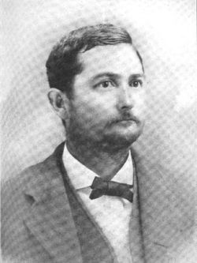

Silas Morton Young
Back to the Railroad Organizers index
Identity confidence: Verified.
Silas Morton Young was a Brooks County farmer, landowner, turpentine operator, merchant, banker, school-board president, postmaster, and railroad organizer. Friends called him Bully Young. He was born in Georgia on April 3, 1850 and died at his home near Nile on August 25, 1911. Huxford places his birth in Lowndes County, where the census found him as an infant before Brooks County existed. That county identification is strong probable rather than proved by a contemporary birth record. Original census, marriage, tax, postmaster, and cemetery records establish the identity behind the initials S. M. Young.[1-10]

Silas Morton Young. Portrait attached to Find a Grave memorial 211690535 by memorial contributor Kris. The memorial does not identify the original photographer or owner.
Parents and childhood
The 1850 census lists him as the infant Silas "Yeung" in Lowndes County with Matthew and Emily Young and four older children. By 1860 the family was in the newly created Brooks County, where the index gives Silas contradictory age readings. The household continuity and later records identify him as the same child born in 1850.[1-2]
Huxford identifies his parents as Matthew Young and Emily Morton. Emily was a sister of James O. Morton, an early Brooks County official and banker. An 1870 legislative report also names James O. Morton as an executor settling with the minor Silas M. Young. A 1911 obituary says Young was reared by an uncle printed as Judge J. O. Martin, then calls that man Judge Morton in the next clause. The internal conflict and the family evidence point toward Morton, but the wording is not clean enough to treat the obituary as independent proof of the uncle's name. The county history traces both families much farther back, but those extended lines depend on compiled genealogy. This dossier treats the parents and local household chain as verified while leaving the earlier ancestry secondary.[10][22]
The original 1870 census places twenty-year-old Silas Young in the Quitman district. He worked as a farm laborer and reported $1,600 in personal property. He had not yet married.[3]
Marriage and children
The original Brooks County marriage book corrects a long-repeated date. The license and minister's return both say that Silas M. Young and Ivey L. Johnson married on October 19, 1871. Huxford prints October 17. The original record controls.[4][10]
The 1880 census writes the household head as S. J. Young, and the index follows that form. His age, location, occupation, wife I. L., and children Mary A., Emily A., James A., Henry L., and infant B. identify the household as Silas Morton's. The middle initial is an enumerator error or aberrant rendering, not evidence of another man.[5]
Huxford names eight children: Mary Araminta, Henry Lane, Silas Morton Jr., Sarah Lavinia, William Briggs, Rachel Aleph, Emily Anna, and James Otis. The 1900 and 1910 censuses independently place William Briggs, Morton, Rachel, and Sarah or Lavinia in the household. The two children absent from the later schedules, Emily Anna and James Otis, reportedly died young.[7-8][10]
The 1911 obituaries name six surviving adult children. That does not contradict the eight-child family list. It reflects the deaths of Emily and James before their father.[22]
Building the farm
Huxford says Young first bought a small farm, sold it in 1878, and then bought 1,000 acres about six miles north of Quitman. He added adjoining land and eventually held about 2,500 acres. A contemporary 1887 hailstorm report independently placed his farm about seven miles north of Quitman.[10-11]
The original 1890 Morven District tax digest supplies the first firm acreage figure. It records Silas M. Young with 2,000 acres valued at $8,000 and town property valued at $500. The entry appears to record ten farm hands, although its land-lot numerals need a closer archival reading before they are quoted.[6]
The 1900 census calls him a farmer who owned his farm free of mortgage. In 1910 he was a farmer and employer, again on a mortgage-free farm. A February 1911 county profile reported 2,000 acres in one body at Niles and another 500 acres at Morven. Huxford's total, the tax digest, and the newspaper can be reconciled as dated or rounded descriptions, but none should be treated as an exact deed inventory at death.[7-8][21]
The 1908 Brooks County map gives the home plantation a firmer location. It marks Young ownership in Land Lots 356, 357, and 381, with another Young tract in the northwest part of Lot 355. Lot 357 is labeled "Young (Timber)". The map places "S. M. Young Res." in the southwest corner of Lot 356, west of the Adel-Quitman Road and just north of Springhill School. These are map labels, not surveyed deed boundaries, so the map does not prove the exact acreage within each lot.[24]
Farming, turpentine, and horses
Young's work extended beyond ordinary row-crop farming. An 1888 report placed a turpentine operation on his farm. In November 1890, two newspapers identified the turpentine still of S. M. Young & Co. about eighteen miles north of Quitman. The reports prove the firm and the operation but do not name the other partner or partners.[11]
An 1892 farming report credited him with cultivating sixty acres to the plow through improved methods and machinery. The figure describes a reported work rate, not the size of the farm.[13]
Horses were another interest. A newspaper used the nickname Bully Young in 1890 when reporting that his mare won a 350-yard race against a horse backed by Mitchell Brice. Later that year he joined J. W. Hopson, Brice, S. S. Rountree, L. T. Creech, and Fuller Groover as an incorporator of the Brooks County Trotting Association.[11-12]
Banking and mercantile work
Young was elected a director of the Merchants and Farmers Bank at its February 4, 1896 annual meeting. Huxford's bank chronology also places him on the board in 1893. The state bank became the First National Bank of Quitman in 1905, and Young's 1911 obituary calls him a First National director. The later directorship is verified as reported, but no surviving board list found in this search fixes the date of his return or continuation after nationalization.[10][14][22]
He also entered the mercantile trade. In October 1896, D. R. Creech & Son filed mortgages that included one in Young's favor. The following day's report said the firm had sold its general-merchandise stock to him. The newspapers do not say how long he operated the business.[16]
Huxford's transcription of the Quitman Free Press business list for April 3, 1897 names "S. M. Young, Farm-supplies." This is a dated business listing, not merely a general description of a planter who bought supplies.[17]
South Georgia Railroad
Young helped organize the South Georgia Railroad but was not one of its first directors. Huxford places him on the county-at-large subscription committee appointed January 29, 1896. The committee covered the countryside while A. J. Rountree, Frank J. Spain, R. C. McIntosh, and John W. Hopson worked in Quitman.[15]
Huxford also names S. M. Young among the twenty-six petitioners for the charter. The first board and officer slate did not include him. No original charter petition, stock ledger, or subscription book was found online, so the committee and petitioner roles remain strong probable from the county history. His subscription amount, share count, right-of-way work, and any later railroad investment are unresolved.[15]
Agricultural and political activity
Young took part in county agricultural organizing. In October 1900 he successfully moved that district committees be allowed to hire canvassers with teams to collect products for the Brooks County exhibit. This was practical organizing work, not an honorary listing.[18]
In 1897 he served on an advisory board for Valdosta's Harvest Celebration and Horse Swappers Convention. In June 1908, delegate lists identify S. M. Young of Nile among the Brooks County delegates to the state convention that nominated Joseph M. Brown for governor. These reports document public and political participation but not elective office.[20]
School board and Masonry
The 1911 Macon obituary identifies Young as a member of the Brooks County Board of Education. Huxford's office roster is more precise: it places him on the board from July 1893 until his death and names him president for 1908-09. The roster is detailed secondary evidence because the original board minutes were not available online.[10][22]
Huxford also says Young belonged to Sholto Lodge No. 237, Free and Accepted Masons. No membership return or lodge record naming him was located in the accessible online sources. The affiliation is strong probable rather than independently verified.[10]
Postmaster and the place-name problem
The federal postmaster register names Silas M. Young as postmaster at Nile, Brooks County, appointed August 13, 1903. Huxford gives the same date. Ancestry's derivative index says August 15, and an Atlanta Journal notice published on August 15 says he replaced Charles A. Crocker, who had resigned. The newspaper establishes the announcement date, not the appointment date. The original register controls.[19]
The newspapers sometimes place Young at Spain, Nile or Niles, and Morven. The evidence points to one person:
- Young farmed north of Quitman by 1887.
- A 1903 convention list used Spain as his post-office address.
- The federal register and later newspapers place his postmastership and home at Nile.
- The 1911 profile separates a 2,000-acre Niles tract from 500 acres at Morven.[11][19][21]
Spain was an address used in 1903, Nile was his post office and home area, and Morven referred to a district or separate holding. The records do not provide surveyed boundaries among the settlement, post office, militia district, and individual tracts.
Oliver B. Rogers received the Nile appointment in January 1912. A contemporary notice said he replaced Young, deceased. That supports Young's tenure until death, though it does not identify who handled the office during the five-month vacancy.[23]
Illness, death, and burial
The Valdosta Daily Times reported on August 26, 1911 that Young had died the previous evening after a serious illness. It called him Bully Young, placed him in the Nile district, and estimated his age at about sixty-five. The next day's Macon Telegraph named him Silas Morton Young, gave his age as sixty-one, and said he died after cancer and several operations. The age of sixty-one agrees with the 1850 birth record and cemetery marker.[1][9][22]
The Macon report described a 2,000-acre plantation, while the February profile reported 2,000 acres at Niles plus 500 at Morven. The obituary may have counted the home plantation or rounded the estate. A probate inventory was not found, so the dossier preserves both figures.[21-22]
His photographed marker in Oak Hill Cemetery reads:
SILAS MORTON YOUNG
APRIL 3, 1850
AUG. 25, 1911
Huxford says Ivy died March 15, 1931 and was buried there with him. Her original death certificate or marker was not inspected in this investigation.[9-10]
Namesake control
The elder Silas must be separated from his son, usually called S. Morton Young or Silas Morton Young Jr. The younger man's residence burned in 1924, and he was murdered in 1926. Those events do not belong to the father's lifetime. A Find a Grave derivative record gives the son's birth as 1892, but the 1900 and 1910 censuses place his birth about 1882-83. The census evidence controls unless the son's own original vital record proves otherwise.[7-10]
The 1924 fire appears to connect the son to the father's mapped home. The Macon Telegraph called the burned residence a large country seat, a beautiful home for generations, and placed it eight miles from Quitman. The younger Silas was still in his father's household in 1910. Taken together with the 1908 residence label, this makes it strongly probable that the house marked in the southwest corner of Land Lot 356 later became the son's home and burned in 1924. The article does not give a land-lot number, so the identification remains strong probable rather than verified.[8][24-25]
Confidence summary
| Question | Finding | Confidence |
|---|---|---|
| Identity | Silas Morton Young, also S. M. and Bully Young | Verified |
| Birth | April 3, 1850, Georgia; probably Lowndes County | Date and state verified; exact county strong probable |
| Parents | Matthew Young and Emily Morton | Verified |
| Marriage | Ivey L. Johnson, October 19, 1871 | Verified from original record |
| Children | Eight in Huxford; six survived him | Strong probable for full list; verified for census and obituary appearances |
| Farm | 2,000 acres in 1890; about 2,500 total by 1911 | Verified for 1890 tax entry; later total approximate |
| Mapped home plantation | Young labels in Lots 356, 357, 381, and part of 355; residence in southwest Lot 356 | Verified from 1908 map; exact deed boundaries unresolved |
| 1924 burned house | Probably the mapped Lot 356 residence later occupied by the son | Strong probable; no fire report or deed gives a land-lot number |
| Turpentine | Farm by 1888; S. M. Young & Co. still in 1890 | Verified as reported |
| Banking | Merchants and Farmers director in 1896; later First National director | Verified as reported; exact later board chronology unresolved |
| Merchandise | Acquired Creech & Son stock in 1896; farm-supply listing in 1897 | Verified sale as reported; listing strong probable from Huxford transcript |
| Railroad | County subscription committee and charter petitioner; not first director | Strong probable from Huxford |
| School board | Member and 1908-09 president | Verified membership as reported; presidency strong probable from Huxford roster |
| Postmaster | Nile, appointed August 13, 1903 | Verified from original register |
| Death and burial | August 25, 1911; Oak Hill Cemetery | Verified |
Sources
- 1850 U.S. census, Lowndes County, Georgia, Silas Young indexed as Silas Yeung, Ancestry collection
8054, record18779745, image4193244-00480. - 1860 U.S. census, Brooks County, Georgia, Silas Young, Ancestry collection
7667, record10751727, image4211371_00009. - 1870 U.S. census, Quitman District, Brooks County, Silas Young, Ancestry collection
7163, record3691150, image4263363_00194. - Brooks County marriage book, Silas M. Young and Ivey L. Johnson, October 19, 1871, Ancestry collection
4766, record182714, image40951_294515-00292. - 1880 U.S. census, Quitman District, Brooks County, S. J. Young household, Ancestry collection
6742, record40729727, image4240127-00251. - Brooks County property-tax digest, Morven District, 1890, Silas M. Young, Ancestry collection
1729, record716723. - 1900 U.S. census, Militia District 660, Brooks County, Silas M. Young, Ancestry collection
7602, record52858039. - 1910 U.S. census, Morven, Brooks County, Silas M. Young, Ancestry collection
7884, record3194127. - Find a Grave memorial 211690535, Oak Hill Cemetery, with attached marker photograph and portraits.
- Folks Huxford, The History of Brooks County, Georgia, 1858-1948 (1948), especially pp. 197-200, 212-13, 255, 582-84, and 836.
1185257960926925397
; Savannah Morning News, April 15 and November 13, 1890, images852601577and852617393; Atlanta Constitution, November 11, 1890, image26783506`. - Atlanta Journal, November 20, 1890, Brooks County Trotting Association, Newspapers.com image
968838649. - Savannah Morning News, March 14, 1892, Newspapers.com image
778611547; Macon Telegraph and Atlanta Journal, September 15, 1893, images825355934and969472298. - Macon Telegraph, Atlanta Constitution, and Atlanta Journal, February 5, 1896, Merchants and Farmers Bank election, Newspapers.com images [
82534935226809502, and968841689. - Huxford, History of Brooks County, pp. 197-98, railroad subscription and charter account. 16852591309`.
- Quitman Free Press business list, April 3, 1897, transcribed in Huxford, pp. 199-200.
- Valdosta Times, October 16, 1900, Brooks County exhibit meeting, Newspapers.com image
889665001. - National Archives, Record Group 28, Record of Appointment of Postmasters, M841, roll 22, vol. 68a, Silas M. Young, Nile, August 13, 1903; Ancestry collection
1932, record1630592, image30439_065407-00169, whose derivative index gives August 15; Atlanta Journal, August 15, 1903, Newspapers.com image969482717. - Valdosta Times, November 6, 1897, Newspapers.com image
889779159; Atlanta Constitution, June 14, 1908, image26899975; Atlanta Journal, June 15 and 22, 1908, images969913653and969915802. - Macon Telegraph, February 19, 1911, Brooks County profile, Newspapers.com image
825463936. 22825384531`](https://www.newspapers.com/image/825384531/). - Atlanta Journal, January 25, 1912, Nile postmaster succession notice, preserved in the newspaper research corpus; Huxford, p. 255.
- R. D. Flippen, Map of Brooks County, Georgia (Hudgins Co., 1908), Georgia Archives County Maps item
cmf:285. - Macon Telegraph, April 22, 1924, report of the S. Morton Young residence fire, Newspapers.com image
826036352.
Research coverage and remaining work
The project searched stored local evidence first, then authenticated Newspapers.com, Georgia Historic Newspapers, Ancestry census, marriage, tax, postmaster, probate, directory, and cemetery collections, Find a Grave, federal bank reports, Internet Archive, Digital Library of Georgia, and broader web results. Searches covered full-name, initials, nickname, family, business, place, railroad, bank, school, political, death, and estate variants.
The accessible online search did not locate the complete deed chain, surveyed boundaries within the mapped land lots, a record that directly identifies the Lot 356 house as the one burned in 1924, original railroad charter petition, stock ledger, subscription amount, railroad board minutes, bank board minutes, county school-board minutes, lodge membership return, probate inventory, or a complete Quitman Free Press run. These are gaps in the accessible record, not evidence that the records do not exist.